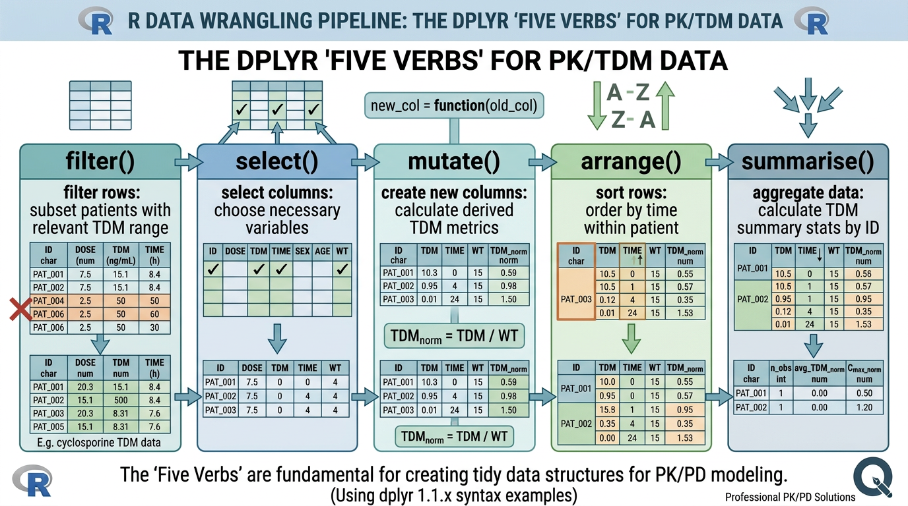
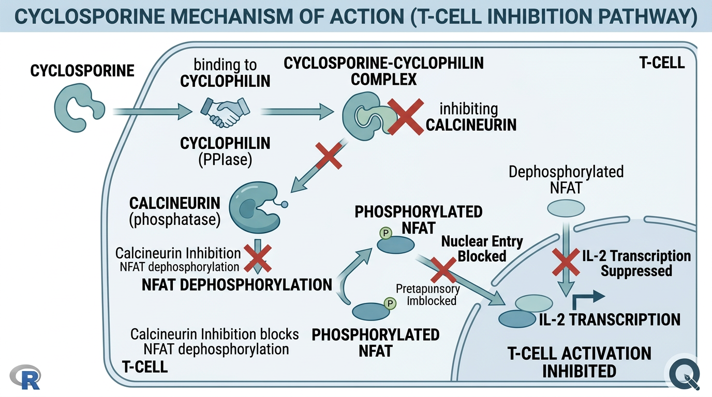
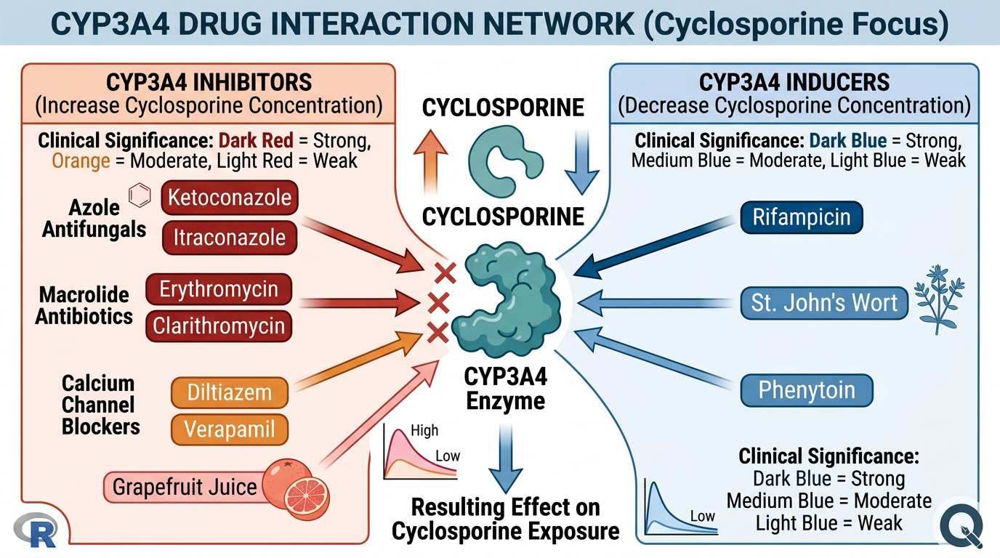

# 이 장에서 사용하는 패키지
library(tidyverse)3 R 객체 다루기 I: 기본 조작
이전 장에서 R의 기본 객체 유형(벡터, 리스트, 데이터프레임 등)에 대해 학습했습니다. 이번 장에서는 이러한 객체들을 실제 약동학 데이터 분석에서 활용하는 방법을 배웁니다. 특히 tidyverse 패키지 생태계의 핵심인 dplyr을 중심으로, Cyclosporine 치료적 약물 모니터링(TDM) 데이터를 예제로 사용하여 데이터 조작의 기초를 다집니다.
3.1 파이프 연산자
3.1.1 파이프가 필요한 이유
PK 데이터 분석에서는 하나의 데이터셋에 대해 여러 단계의 처리를 순차적으로 수행하는 경우가 많습니다. 예를 들어, “환자별로 C0 농도만 필터링하고, 평균을 구하고, 높은 순서로 정렬”하는 작업을 생각해 봅시다.
파이프 없이 작성하면 코드가 중첩(nested)되어 가독성이 크게 떨어집니다:
# 중첩된 함수 호출 - 안쪽에서 바깥쪽으로 읽어야 함
arrange(
summarise(
group_by(
filter(pk_data, sample_type == "C0"),
patient_id
),
mean_c0 = mean(concentration, na.rm = TRUE)
),
desc(mean_c0)
)이 코드는 가장 안쪽의 filter()부터 바깥쪽의 arrange()까지 읽어야 하므로 직관적이지 않습니다. 파이프 연산자를 사용하면 위에서 아래로 자연스럽게 읽을 수 있습니다.
3.1.2 |> vs %>% 비교
R에는 두 가지 파이프 연산자가 있습니다:
# R 내장 파이프 (R 4.1.0+)
pk_data |>
filter(sample_type == "C0") |>
group_by(patient_id) |>
summarise(mean_c0 = mean(concentration, na.rm = TRUE)) |>
arrange(desc(mean_c0))
# magrittr 파이프 (tidyverse와 함께 로드됨)
pk_data %>%
filter(sample_type == "C0") %>%
group_by(patient_id) %>%
summarise(mean_c0 = mean(concentration, na.rm = TRUE)) %>%
arrange(desc(mean_c0))두 파이프 모두 “왼쪽 결과를 오른쪽 함수의 첫 번째 인자로 전달”하는 역할을 합니다.
| 특성 | |> (내장 파이프) |
%>% (magrittr) |
|---|---|---|
| 설치 | R 4.1.0 이상 기본 내장 | magrittr 패키지 필요 |
| 속도 | 약간 빠름 | 약간 느림 |
| 플레이스홀더 | _ (R 4.2.0+) |
. |
| 익명 함수 | 지원하지 않음 | {...} 블록 사용 가능 |
힌트어떤 파이프를 사용할까?
이 책에서는 R 내장 파이프 |>를 주로 사용합니다. 추가 패키지 설치가 필요 없고, R의 공식적인 방향성과 일치하기 때문입니다. 다만 기존 코드에서 %>%를 많이 볼 수 있으므로 두 가지 모두 이해하고 있어야 합니다.
3.1.3 파이프와 플레이스홀더
기본적으로 파이프는 왼쪽 결과를 오른쪽 함수의 첫 번째 인자로 전달합니다. 만약 다른 위치에 전달하고 싶다면 플레이스홀더를 사용합니다:
# 내장 파이프의 플레이스홀더: _ (명명된 인자에만 사용 가능)
pk_data |>
lm(concentration ~ time, data = _)
# magrittr 파이프의 플레이스홀더: .
pk_data %>%
lm(concentration ~ time, data = .)3.2 예제 데이터: Cyclosporine TDM
이번 장의 실습에 사용할 데이터를 먼저 살펴보겠습니다. 이 데이터는 아토피 피부염 환자에서 Cyclosporine TDM을 시행한 가상 데이터입니다.
# 예제 데이터 불러오기
csa_tdm <- read_csv("data/cyclosporine_tdm.csv")
# 데이터 구조 확인
glimpse(csa_tdm)Rows: 480
Columns: 12
$ patient_id <chr> "PT001", "PT001", "PT001", "PT001", "PT002", ...
$ visit <dbl> 1, 1, 2, 2, 1, 1, 2, 2, 3, 3, ...
$ date <date> 2024-01-15, 2024-01-15, 2024-02-12, ...
$ sample_type <chr> "C0", "C2", "C0", "C2", "C0", "C2", ...
$ concentration <dbl> 145.2, 1025.3, 162.8, 1180.5, 98.3, ...
$ unit <chr> "ng/mL", "ng/mL", "ng/mL", "ng/mL", ...
$ dose_mg <dbl> 150, 150, 150, 150, 200, 200, ...
$ weight_kg <dbl> 65.2, 65.2, 65.5, 65.5, 78.1, ...
$ age <dbl> 34, 34, 34, 34, 45, 45, 45, ...
$ sex <chr> "F", "F", "F", "F", "M", "M", ...
$ scr_mg_dl <dbl> 0.82, 0.82, 0.85, 0.85, 1.05, ...
$ blq_flag <lgl> FALSE, FALSE, FALSE, FALSE, FALSE, ...각 열의 의미는 다음과 같습니다:
patient_id: 환자 식별 번호visit: 방문 번호sample_type: 채혈 시점 (C0 = 투약 직전 최저농도, C2 = 투약 2시간 후 농도)concentration: Cyclosporine 혈중 농도 (ng/mL)dose_mg: 1회 투여 용량 (mg)weight_kg: 체중 (kg)scr_mg_dl: 혈청 크레아티닌 (mg/dL)blq_flag: 정량한계 미만 여부 (BLQ, Below Limit of Quantification)
3.3 dplyr 5대 동사

dplyr 패키지는 데이터 조작을 위한 5가지 핵심 함수(동사)를 제공합니다. 이들을 조합하면 거의 모든 데이터 변환 작업을 수행할 수 있습니다.
3.3.1 filter(): 행 필터링
filter()는 조건에 맞는 행(관측값)만 선택합니다. SQL의 WHERE절과 유사합니다.
# C0 (trough) 농도만 선택
csa_c0 <- csa_tdm |>
filter(sample_type == "C0")
# 특정 환자의 데이터만 선택
pt001_data <- csa_tdm |>
filter(patient_id == "PT001")
# 여러 조건 조합 (AND)
csa_tdm |>
filter(sample_type == "C0", concentration > 200)
# OR 조건
csa_tdm |>
filter(sample_type == "C0" | sample_type == "C2")
# %in% 연산자로 여러 값 매칭
csa_tdm |>
filter(patient_id %in% c("PT001", "PT002", "PT003"))
경고
== vs = 혼동 주의
비교 연산자 ==와 할당 연산자 =를 혼동하는 것은 초보자가 가장 많이 하는 실수 중 하나입니다. filter(sample_type = "C0")은 에러가 발생합니다. 반드시 filter(sample_type == "C0")으로 작성해야 합니다.
3.3.1.1 BLQ 데이터 필터링
약동학 분석에서 BLQ(정량한계 미만) 데이터의 처리는 중요한 문제입니다. 우선 BLQ 데이터를 확인하고, 필요에 따라 제외할 수 있습니다:
# BLQ 데이터 확인
csa_tdm |>
filter(blq_flag == TRUE)
# BLQ 제외
csa_tdm_no_blq <- csa_tdm |>
filter(blq_flag == FALSE)
# 또는 ! 연산자 사용
csa_tdm_no_blq <- csa_tdm |>
filter(!blq_flag)3.3.2 select(): 열 선택
select()는 필요한 열(변수)만 선택하거나 제거합니다.
# 필요한 열만 선택
csa_tdm |>
select(patient_id, visit, sample_type, concentration)
# 열 제거
csa_tdm |>
select(-blq_flag, -unit)
# 열 이름 패턴으로 선택
csa_tdm |>
select(patient_id, starts_with("dose"), ends_with("kg"))
# 열 이름 변경과 동시에 선택
csa_tdm |>
select(ID = patient_id, CONC = concentration, TIME_TYPE = sample_type)
# 열 순서 재배치 (everything()은 나머지 모든 열)
csa_tdm |>
select(patient_id, concentration, everything())
힌트select() 도우미 함수들
select() 안에서 사용할 수 있는 유용한 도우미 함수들이 있습니다:
starts_with("abc"): “abc”로 시작하는 열ends_with("xyz"): “xyz”로 끝나는 열contains("ijk"): “ijk”를 포함하는 열matches("\\d+"): 정규표현식에 매칭되는 열num_range("x", 1:5): x1, x2, x3, x4, x5 선택where(is.numeric): 숫자형 열만 선택
3.3.3 mutate(): 새 열 생성/변환
mutate()는 기존 열을 이용하여 새로운 열을 생성하거나, 기존 열의 값을 변환합니다. PK 데이터 분석에서 가장 많이 사용하는 동사 중 하나입니다.
3.3.3.1 단위 변환
# ng/mL → mcg/L (숫자적으로는 동일하지만, 명시적 변환 예시)
# ng/mL → mg/L 변환
csa_tdm <- csa_tdm |>
mutate(
conc_mg_l = concentration / 1000, # ng/mL → mg/L (= μg/mL)
conc_mcg_l = concentration # ng/mL = mcg/L (수치 동일)
)3.3.3.2 체중 보정 용량 계산
# 체중 기반 용량 (mg/kg) 계산
csa_tdm <- csa_tdm |>
mutate(
dose_mg_kg = dose_mg / weight_kg,
dose_mg_kg_day = (dose_mg * 2) / weight_kg # BID 투여 가정
)3.3.3.3 eGFR 계산 (CKD-EPI 공식)
Cyclosporine은 신독성이 있으므로, 신기능 모니터링이 필수적입니다. eGFR(estimated Glomerular Filtration Rate)을 계산하는 열을 추가해 보겠습니다:
# CKD-EPI 공식을 이용한 eGFR 계산 (간소화 버전)
csa_tdm <- csa_tdm |>
mutate(
# 성별에 따른 계수 결정
kappa = if_else(sex == "F", 0.7, 0.9),
alpha = if_else(sex == "F", -0.241, -0.302),
sex_coeff = if_else(sex == "F", 1.012, 1.0),
# eGFR 계산
scr_kappa_ratio = scr_mg_dl / kappa,
egfr = 142 *
pmin(scr_kappa_ratio, 1)^alpha *
pmax(scr_kappa_ratio, 1)^(-1.200) *
0.9938^age *
sex_coeff
)
중요임상 참고: eGFR과 Cyclosporine 용량 조절
eGFR이 기저치 대비 25% 이상 감소하면 Cyclosporine 감량을 고려해야 합니다. eGFR이 기저치 대비 50% 이상 감소하면 투약 중단을 고려합니다. 이러한 임상 판단을 데이터에서 자동으로 플래그하는 코드를 작성할 수 있습니다:
csa_tdm <- csa_tdm |>
group_by(patient_id) |>
mutate(
baseline_egfr = first(egfr),
egfr_change_pct = (egfr - baseline_egfr) / baseline_egfr * 100,
renal_alert = case_when(
egfr_change_pct <= -50 ~ "중단 고려",
egfr_change_pct <= -25 ~ "감량 고려",
TRUE ~ "정상 범위"
)
) |>
ungroup()3.3.3.4 case_when()을 이용한 조건부 변환
# C0 농도 기반 치료 범위 판정
csa_tdm <- csa_tdm |>
mutate(
c0_range = case_when(
sample_type != "C0" ~ NA_character_,
concentration < 100 ~ "치료 범위 미만",
concentration <= 200 ~ "치료 범위 이내",
concentration > 200 ~ "치료 범위 초과"
)
)3.3.4 arrange(): 행 정렬
arrange()는 하나 이상의 열을 기준으로 데이터를 정렬합니다. PK 데이터에서는 환자별, 시간순 정렬이 기본입니다.
# 환자별, 방문별, 채혈 시점별 정렬
csa_tdm |>
arrange(patient_id, visit, sample_type)
# 내림차순 정렬
csa_tdm |>
arrange(patient_id, desc(concentration))
# 농도 높은 순서로 정렬 (이상치 확인에 유용)
csa_tdm |>
filter(sample_type == "C0") |>
arrange(desc(concentration)) |>
head(10)
힌트PK 데이터 정렬의 관례
PK 데이터셋에서는 일반적으로 patient_id → time (또는 visit) → record type 순서로 정렬합니다. NONMEM 등 모델링 소프트웨어에 입력할 데이터를 준비할 때 이 정렬 순서가 중요합니다.
3.3.5 summarise() + group_by(): 요약 통계
summarise()는 데이터를 요약하여 하나(또는 그룹당 하나)의 행으로 축약합니다. group_by()와 함께 사용하면 그룹별 요약 통계를 쉽게 계산할 수 있습니다.
# 전체 C0 농도의 요약 통계
csa_tdm |>
filter(sample_type == "C0") |>
summarise(
n = n(),
mean_c0 = mean(concentration, na.rm = TRUE),
sd_c0 = sd(concentration, na.rm = TRUE),
median_c0 = median(concentration, na.rm = TRUE),
min_c0 = min(concentration, na.rm = TRUE),
max_c0 = max(concentration, na.rm = TRUE)
)# 환자별 C0 평균 농도 계산
patient_c0_summary <- csa_tdm |>
filter(sample_type == "C0", !blq_flag) |>
group_by(patient_id) |>
summarise(
n_visits = n(),
mean_c0 = mean(concentration, na.rm = TRUE),
cv_c0 = sd(concentration, na.rm = TRUE) / mean(concentration, na.rm = TRUE) * 100,
mean_dose_mg_kg = mean(dose_mg / weight_kg, na.rm = TRUE)
) |>
arrange(desc(mean_c0))
patient_c0_summary# 성별별 C0 및 C2 농도 비교
csa_tdm |>
filter(!blq_flag) |>
group_by(sex, sample_type) |>
summarise(
n = n(),
mean_conc = mean(concentration, na.rm = TRUE),
sd_conc = sd(concentration, na.rm = TRUE),
.groups = "drop" # 그룹 해제
)
경고
group_by() 후 ungroup() 잊지 않기
group_by()로 그룹화한 후 후속 작업에서 예상치 못한 결과가 나올 수 있습니다. summarise()는 기본적으로 마지막 그룹을 제거하지만, mutate() 등 다른 동사와 함께 사용할 때는 반드시 ungroup()으로 그룹을 해제해야 합니다. 또는 summarise(.groups = "drop")을 명시적으로 사용하는 것이 좋습니다.
3.3.6 5대 동사 조합: 실전 예제
5가지 동사를 조합하여 실제 분석에 가까운 작업을 수행해 봅시다:
# 실전 예제: C0가 치료 범위를 초과한 환자의 용량 요약
high_c0_patients <- csa_tdm |>
filter(sample_type == "C0", # C0 농도만
!blq_flag, # BLQ 제외
concentration > 200) |> # 치료 범위 초과
select(patient_id, visit, concentration, dose_mg, weight_kg) |>
mutate(dose_mg_kg = dose_mg / weight_kg) |>
group_by(patient_id) |>
summarise(
n_high = n(),
mean_c0 = mean(concentration),
max_c0 = max(concentration),
mean_dose_mg_kg = mean(dose_mg_kg)
) |>
arrange(desc(max_c0))
high_c0_patients# 실전 예제: C2/C0 비율 계산 (같은 visit 내에서)
c2_c0_ratio <- csa_tdm |>
filter(!blq_flag) |>
select(patient_id, visit, sample_type, concentration) |>
pivot_wider(
names_from = sample_type,
values_from = concentration
) |>
mutate(c2_c0_ratio = C2 / C0) |>
arrange(patient_id, visit)
c2_c0_ratio3.4 조건문과 반복문
3.4.1 if/else 문
# 기본 if/else 구조
dose_recommendation <- function(c0_level) {
if (c0_level < 100) {
"용량 증가 고려"
} else if (c0_level <= 200) {
"현재 용량 유지"
} else {
"용량 감소 고려"
}
}
dose_recommendation(180) # "현재 용량 유지"
dose_recommendation(250) # "용량 감소 고려"
경고
if_else() vs ifelse() vs if/else
if/else: 단일 조건 평가 (스칼라). 벡터화되지 않음ifelse(): 벡터화된 조건문. 타입 불일치 주의dplyr::if_else(): 벡터화, 타입 엄격 검사. 권장dplyr::case_when(): 여러 조건을 순차적으로 평가. 가장 유연
# 벡터에서는 if_else() 또는 case_when() 사용
csa_tdm |>
mutate(
range_flag = if_else(concentration > 200, "High", "Normal")
)3.4.2 for 반복문
# 환자별 반복 작업 (for문)
patient_ids <- unique(csa_tdm$patient_id)
results <- list()
for (i in seq_along(patient_ids)) {
pt_data <- csa_tdm |>
filter(patient_id == patient_ids[i], sample_type == "C0")
results[[i]] <- tibble(
patient_id = patient_ids[i],
n_obs = nrow(pt_data),
mean_c0 = mean(pt_data$concentration, na.rm = TRUE)
)
}
results_df <- bind_rows(results)3.4.3 apply 계열 vs purrr::map()
R에서 반복 작업을 수행하는 방법은 여러 가지가 있습니다. 전통적인 apply 계열과 tidyverse의 purrr::map() 계열을 비교해 보겠습니다:
# sapply: 각 환자의 평균 C0 농도
sapply(patient_ids, function(pid) {
csa_tdm |>
filter(patient_id == pid, sample_type == "C0") |>
pull(concentration) |>
mean(na.rm = TRUE)
})
# purrr::map_dbl: 동일한 작업을 tidyverse 스타일로
patient_ids |>
map_dbl(~ {
csa_tdm |>
filter(patient_id == .x, sample_type == "C0") |>
pull(concentration) |>
mean(na.rm = TRUE)
})# purrr::map_dfr: 결과를 데이터프레임으로 합치기
patient_summary <- patient_ids |>
map_dfr(~ {
pt_data <- csa_tdm |>
filter(patient_id == .x, sample_type == "C0")
tibble(
patient_id = .x,
n_obs = nrow(pt_data),
mean_c0 = mean(pt_data$concentration, na.rm = TRUE),
sd_c0 = sd(pt_data$concentration, na.rm = TRUE)
)
})
힌트group_by()로 대체 가능한 경우
위 예제처럼 그룹별 요약을 수행하는 경우, 대부분 group_by() + summarise()로 더 간결하게 작성할 수 있습니다. map()은 그룹별로 모델 피팅, 그래프 생성 등 복잡한 작업에 더 적합합니다.
3.5 함수 작성 기초
PK 데이터 처리에서는 동일한 변환이나 계산을 반복적으로 수행합니다. 이러한 작업을 함수로 정의하면 코드의 재사용성과 가독성이 크게 향상됩니다.
3.5.1 기본 함수 구조
# 함수의 기본 구조
function_name <- function(arg1, arg2, arg3 = default_value) {
# 함수 본문
result <- arg1 + arg2 * arg3
return(result) # 또는 마지막 표현식이 자동 반환
}3.5.2 단위 변환 함수
# ng/mL → 다른 단위로 변환
convert_conc <- function(value, from = "ng_ml", to = "mg_l") {
# 먼저 ng/mL로 통일
value_ng_ml <- switch(from,
"ng_ml" = value,
"mcg_l" = value, # ng/mL = mcg/L
"mg_l" = value * 1000, # mg/L → ng/mL
"mcg_ml" = value * 1000, # mcg/mL → ng/mL
stop("지원하지 않는 입력 단위: ", from)
)
# 목표 단위로 변환
result <- switch(to,
"ng_ml" = value_ng_ml,
"mcg_l" = value_ng_ml, # ng/mL = mcg/L
"mg_l" = value_ng_ml / 1000, # ng/mL → mg/L
"mcg_ml" = value_ng_ml / 1000, # ng/mL → mcg/mL
stop("지원하지 않는 출력 단위: ", to)
)
return(result)
}
# 사용 예시
convert_conc(150, from = "ng_ml", to = "mg_l") # 0.15
convert_conc(0.15, from = "mg_l", to = "ng_ml") # 1503.5.3 eGFR 계산 함수
# CKD-EPI 2021 eGFR 계산 함수
calc_egfr_ckdepi <- function(scr, age, sex) {
# 인자 검증
if (any(scr <= 0, na.rm = TRUE)) {
warning("혈청 크레아티닌 값이 0 이하인 경우가 있습니다.")
}
if (any(age < 18, na.rm = TRUE)) {
warning("CKD-EPI 공식은 18세 이상에서 사용해야 합니다.")
}
# 성별에 따른 상수
kappa <- if_else(sex == "F", 0.7, 0.9)
alpha <- if_else(sex == "F", -0.241, -0.302)
sex_coeff <- if_else(sex == "F", 1.012, 1.0)
# eGFR 계산
scr_ratio <- scr / kappa
egfr <- 142 *
pmin(scr_ratio, 1)^alpha *
pmax(scr_ratio, 1)^(-1.200) *
0.9938^age *
sex_coeff
return(round(egfr, 1))
}
# 사용 예시
calc_egfr_ckdepi(scr = 0.9, age = 35, sex = "M") # 약 107.33.5.4 체중 기반 용량 계산 함수
# Cyclosporine 체중 기반 용량 계산 및 용량 범위 확인
calc_csa_dose <- function(weight_kg, target_mg_kg_day = 4, frequency = "BID") {
total_daily_dose <- weight_kg * target_mg_kg_day
single_dose <- switch(frequency,
"BID" = total_daily_dose / 2,
"QD" = total_daily_dose,
"TID" = total_daily_dose / 3,
stop("지원하지 않는 투여 빈도: ", frequency)
)
# 25mg 단위로 반올림 (실제 캡슐 용량에 맞춤)
single_dose_rounded <- round(single_dose / 25) * 25
tibble(
weight_kg = weight_kg,
target_mg_kg_day = target_mg_kg_day,
frequency = frequency,
daily_dose_mg = single_dose_rounded * if_else(frequency == "BID", 2,
if_else(frequency == "TID", 3, 1)),
single_dose_mg = single_dose_rounded,
actual_mg_kg_day = daily_dose_mg / weight_kg
)
}
# 사용 예시
calc_csa_dose(65, target_mg_kg_day = 4)
calc_csa_dose(80, target_mg_kg_day = 3)3.6 약리학 노트: Cyclosporine

노트Cyclosporine 약리학 개요
Cyclosporine A (CsA)는 Tolypocladium inflatum 곰팡이에서 분리된 11개 아미노산으로 구성된 고리형 펩타이드(cyclic peptide)로, 1970년대에 발견된 이후 장기이식 거부반응 예방과 다양한 자가면역질환 치료에 사용되어 왔습니다.
3.6.1 작용기전
Cyclosporine의 작용기전은 다음과 같습니다:
- 세포 내 진입: Cyclosporine은 T 림프구 세포 내로 확산
- Cyclophilin 결합: 세포 내에서 immunophilin인 cyclophilin에 결합
- Calcineurin 억제: Cyclosporine-cyclophilin 복합체가 calcineurin (serine/threonine phosphatase)을 억제
- NFAT 탈인산화 차단: Calcineurin이 억제되면 NFAT (Nuclear Factor of Activated T-cells)의 탈인산화가 차단
- IL-2 전사 차단: NFAT가 핵 내로 이동하지 못하여 IL-2, IFN-γ 등 사이토카인의 전사가 억제
- T세포 활성화 억제: 결과적으로 T세포 매개 면역반응이 억제됨
3.6.2 아토피 피부염에서의 사용
아토피 피부염에서 Cyclosporine은 중등도-중증 성인 환자에서 사용됩니다:
- 용량: 3-5 mg/kg/day, BID 분할 투여
- 시작 용량: 일반적으로 3 mg/kg/day로 시작
- 최대 사용 기간: 일반적으로 1-2년 (가이드라인에 따라 다름)
- 효과 발현: 2-4주 내에 임상적 호전 관찰
- SCORAD 개선: 50% 이상 개선을 기대할 수 있음
3.6.3 약동학적 특성
| 파라미터 | 값 |
|---|---|
| 생체이용률 (F) | 20-50% (제형에 따라 차이) |
| Tmax | 1.5-2시간 (Neoral), 2-6시간 (Sandimmun) |
| 분포용적 (Vd) | 3-5 L/kg |
| 단백결합률 | 90% (주로 리포단백질) |
| 반감기 (t1/2) | 6-24시간 |
| 대사 | CYP3A4/5 (주), P-glycoprotein 기질 |
| 배설 | 담즙 (주), 소변 (<6%) |
3.6.4 CYP3A4 대사와 약물상호작용

Cyclosporine은 CYP3A4에 의해 주로 대사되므로, 약물상호작용에 매우 주의해야 합니다:
중요임상적으로 중요한 약물상호작용
CYP3A4 억제제 (Cyclosporine 농도 증가):
- Azole 계열 항진균제: ketoconazole, itraconazole, fluconazole, voriconazole
- Macrolide 항생제: erythromycin, clarithromycin (azithromycin은 영향 적음)
- Calcium channel blocker: diltiazem, verapamil (amlodipine은 영향 적음)
- 자몽 주스 (grapefruit juice)
CYP3A4 유도제 (Cyclosporine 농도 감소):
- Rifampin (rifampicin)
- Phenytoin, carbamazepine, phenobarbital
- St. John’s wort (세인트존스워트)
신독성 증가 약물 (병용 시 상가적 신독성):
- NSAIDs
- Aminoglycoside 항생제
- Amphotericin B
- ACE 억제제 (초기)
3.6.5 TDM (치료적 약물 모니터링)
Cyclosporine은 좁은 치료역(narrow therapeutic window), 높은 개인 간 변이(inter-individual variability), 비선형 약동학 특성으로 인해 TDM이 필수적입니다.
C0 모니터링 (Trough level):
- 채혈 시점: 다음 투약 직전 (투약 후 12시간 또는 24시간)
- 아토피 피부염 목표 범위: 100-200 ng/mL
- 이식 환자 목표 범위: 적응증과 이식 후 기간에 따라 다름
C2 모니터링 (2-hour post-dose level):
- 채혈 시점: 투약 후 정확히 2시간
- AUC와의 상관관계가 C0보다 우수하다는 보고
- 목표 범위: 적응증에 따라 다름 (아토피 피부염에서는 아직 표준화되지 않음)
# TDM 결과 해석 함수
interpret_csa_tdm <- function(concentration, sample_type = "C0",
indication = "atopic_dermatitis") {
if (sample_type == "C0" & indication == "atopic_dermatitis") {
range_low <- 100
range_high <- 200
interpretation <- case_when(
concentration < range_low ~ "치료 범위 미만 - 효과 부족 가능성",
concentration <= range_high ~ "치료 범위 이내",
concentration <= 300 ~ "치료 범위 초과 - 용량 감량 고려",
concentration > 300 ~ "독성 위험 - 즉시 용량 조절 필요"
)
} else {
interpretation <- "해당 적응증/채혈 시점의 해석 기준이 설정되지 않았습니다."
}
tibble(
concentration = concentration,
sample_type = sample_type,
indication = indication,
interpretation = interpretation
)
}
# 사용 예시
interpret_csa_tdm(185, "C0")
interpret_csa_tdm(250, "C0")3.6.6 주요 부작용
# 부작용 모니터링 항목 데이터프레임
csa_monitoring <- tibble(
adverse_effect = c("신독성", "간독성", "고혈압", "고칼륨혈증",
"고요산혈증", "고지혈증", "다모증", "잇몸비대",
"진전", "두통"),
monitoring_parameter = c("Scr, eGFR, BUN", "AST, ALT, bilirubin",
"혈압", "혈청 칼륨", "혈청 요산",
"총콜레스테롤, TG, LDL", "임상 관찰",
"임상 관찰", "임상 관찰", "임상 관찰"),
frequency = c("2주마다 → 월 1회", "월 1회", "매 방문",
"월 1회", "필요 시", "3개월마다", "매 방문",
"매 방문", "매 방문", "매 방문"),
action_threshold = c("기저치 대비 >25% 증가", "정상 상한 2배 초과",
"140/90 mmHg 초과", ">5.5 mEq/L",
">8.0 mg/dL", "가이드라인 기준 초과",
NA, NA, NA, NA)
)
csa_monitoring3.7 Claude Code 활용 팁
3.7.1 에러 디버깅
R 코드에서 에러가 발생했을 때, Claude Code에 에러 메시지와 함께 코드를 보여주면 원인을 빠르게 파악할 수 있습니다.
힌트Claude Code 프롬프트 예시: 에러 디버깅
효과적인 프롬프트:
“다음 R 코드에서 에러가 발생합니다. 원인과 해결 방법을 알려주세요.”
csa_tdm |> filter(sample_type == "C0") |> summarize(mean_c0 = mean(concentration))에러 메시지:
Error in summarize(): Column 'mean_c0' must be size 1, not 240
핵심 포인트:
- 에러 메시지를 정확히 복사하여 포함합니다
- 관련 코드를 완전히 포함합니다 (일부분만 보여주면 맥락 파악이 어려움)
- 데이터의 구조를
str()또는glimpse()결과로 보여주면 더 정확한 답변을 받을 수 있습니다
3.7.2 tidyverse 스타일 변환 요청
기존에 base R로 작성된 코드를 tidyverse 스타일로 변환하고 싶을 때 Claude Code를 활용할 수 있습니다:
힌트Claude Code 프롬프트 예시: 코드 스타일 변환
“다음 base R 코드를 tidyverse (dplyr/tidyr) 스타일로 변환해 주세요. 파이프 연산자 |>를 사용해 주세요.”
result <- data.frame( patient_id = unique(csa_tdm$patient_id), mean_c0 = tapply(csa_tdm$concentration[csa_tdm$sample_type == "C0"], csa_tdm$patient_id[csa_tdm$sample_type == "C0"], mean, na.rm = TRUE) ) result <- result[order(-result$mean_c0), ]
Claude Code는 이를 다음과 같이 변환할 수 있습니다:
result <- csa_tdm |>
filter(sample_type == "C0") |>
group_by(patient_id) |>
summarise(mean_c0 = mean(concentration, na.rm = TRUE)) |>
arrange(desc(mean_c0))3.7.3 복잡한 변환 로직 구현
PK 데이터에서 자주 필요하지만 직접 작성하기 어려운 변환 로직을 Claude Code에 자연어로 설명하여 구현할 수 있습니다:
힌트Claude Code 프롬프트 예시: 복잡한 로직
“Cyclosporine TDM 데이터에서 다음을 수행하는 R 코드를 작성해 주세요: 1. 각 환자의 첫 번째 방문 C0를 기저(baseline)으로 설정 2. 이후 방문의 C0를 기저 대비 변화율(%)로 계산 3. 연속 2회 이상 치료 범위(100-200 ng/mL) 초과 시 플래그 표시 데이터 컬럼: patient_id, visit, sample_type, concentration”
3.8 연습 문제
3.8.1 확인 문제
노트확인 문제 1
다음 코드의 출력 결과를 예측하세요:
c(1, 5, 3, 8, 2) |>
sort() |>
rev() |>
head(3)정답 보기
[1] 8 5 3
sort(): 오름차순 정렬 →1, 2, 3, 5, 8rev(): 역순 →8, 5, 3, 2, 1head(3): 앞에서 3개 →8, 5, 3
노트확인 문제 2
filter()와 select()의 차이점은 무엇입니까?
정답 보기
filter(): 행(row)을 조건에 따라 선택합니다. SQL의WHERE에 해당합니다.select(): 열(column)을 선택하거나 제거합니다. SQL의SELECT에 해당합니다.
filter()는 특정 행을 남기는 것이고, select()는 특정 열을 남기는 것입니다.
노트확인 문제 3
다음 중 mutate()와 summarise()의 차이를 올바르게 설명한 것은?
A. mutate()는 새 열을 추가하고, summarise()도 새 열을 추가한다 B. mutate()는 원래 행 수를 유지하고, summarise()는 그룹당 한 행으로 축약한다 C. mutate()는 그룹에서만 작동하고, summarise()는 그룹 없이도 작동한다 D. mutate()와 summarise()는 동일한 기능이다
정답 보기
B.mutate()는 원래 데이터프레임의 행 수를 유지하면서 새 열을 추가(또는 기존 열을 변환)합니다. summarise()는 데이터를 요약하여 그룹당 하나의 행으로 축약합니다.
노트확인 문제 4
|>와 %>%의 주요 차이점 2가지를 설명하세요.
정답 보기
- 출처:
|>는 R 4.1.0부터 내장된 연산자이고,%>%는 magrittr 패키지에서 제공됩니다. - 플레이스홀더:
|>는_를 사용하며 명명된 인자에서만 사용 가능하고,%>%는.을 사용하며 어떤 위치에서든 사용 가능합니다.
노트확인 문제 5
Cyclosporine의 치료적 약물 모니터링에서 C0와 C2의 채혈 시점과 아토피 피부염에서의 C0 목표 범위를 서술하세요.
정답 보기
- C0 (Trough level): 다음 투약 직전에 채혈합니다 (투약 후 약 12시간, BID 투여 시).
- C2: 투약 후 정확히 2시간에 채혈합니다.
- 아토피 피부염에서의 C0 목표 범위: 100-200 ng/mL
3.8.2 R 과제
노트R 과제 1: Cyclosporine TDM 데이터 분석
data/cyclosporine_tdm.csv 데이터를 사용하여 다음을 수행하세요:
- BLQ가 아닌 C0 데이터만 필터링하세요
- 각 환자의 체중 기반 용량(mg/kg/day, BID 가정)을 계산하세요
- 용량 구간별 (≤3, 3-4, 4-5, >5 mg/kg/day) 평균 C0 농도와 표준편차를 계산하세요
- 결과를 평균 C0 내림차순으로 정렬하세요
힌트 보기
csa_tdm |>
filter(___) |>
mutate(
dose_mg_kg_day = ___
) |>
mutate(
dose_group = case_when(
dose_mg_kg_day <= 3 ~ "≤3",
dose_mg_kg_day <= 4 ~ "3-4",
dose_mg_kg_day <= 5 ~ "4-5",
TRUE ~ ">5"
)
) |>
group_by(___) |>
summarise(___) |>
arrange(___)
노트R 과제 2: eGFR 모니터링 함수 활용
- 본문의
calc_egfr_ckdepi()함수를 정의하세요 csa_tdm데이터에 eGFR 열을 추가하세요- 각 환자에 대해 첫 번째 방문의 eGFR을 기저치(baseline)로 설정하세요
- 이후 방문에서 기저치 대비 eGFR 변화율(%)을 계산하세요
- 변화율이 -25% 이하인 관측값을 찾으세요
힌트 보기
csa_tdm |>
mutate(egfr = calc_egfr_ckdepi(scr_mg_dl, age, sex)) |>
group_by(patient_id) |>
mutate(
baseline_egfr = first(egfr),
egfr_change = ___
) |>
ungroup() |>
filter(___)
노트R 과제 3: 커스텀 요약 함수 작성
다음 사양에 맞는 함수 summarise_pk()를 작성하세요:
- 입력: 데이터프레임, 농도 열 이름, 그룹 열 이름
- 출력: 그룹별 N, 평균, SD, CV%, 중앙값, 최솟값, 최댓값을 포함하는 데이터프레임
- BLQ 비율(%)도 계산하세요 (blq_flag 열 사용)
# 함수 시그니처
summarise_pk <- function(data, conc_col, group_col, blq_col = "blq_flag") {
# 여기에 코드 작성
}
# 사용 예시
csa_tdm |>
summarise_pk(conc_col = "concentration",
group_col = "sample_type")힌트 보기
{ } (curly-curly) 연산자 또는 .data[[col_name]] 문법을 사용하여 열 이름을 프로그래밍적으로 참조할 수 있습니다.
3.8.3 Claude Code 과제
힌트Claude Code 과제: TDM 보고서 자동화
Claude Code에 다음과 같이 요청하세요:
“Cyclosporine TDM 데이터(patient_id, visit, sample_type, concentration, dose_mg, weight_kg, scr_mg_dl, sex, age 열 포함)를 입력받아 각 환자별 TDM 보고서를 생성하는 R 함수를 작성해 주세요. 보고서에는 다음이 포함되어야 합니다:
- 환자 기본 정보 (나이, 성별, 체중)
- 방문별 C0 농도 추이와 치료 범위 판정
- 체중 보정 용량
- eGFR 계산 및 변화 추이
- 용량 조절 권고 (C0 기반)
결과는 정리된 tibble로 반환해 주세요.”
이 과제를 통해 Claude Code가 생성한 코드를 이해하고, 필요에 따라 수정하는 연습을 합니다. 생성된 함수에서 개선할 점이 있다면 직접 수정해 보세요.
3.9 이 장의 요약
이 장에서 학습한 핵심 내용을 정리합니다:
파이프 연산자 (
|>또는%>%)를 사용하면 데이터 처리 코드를 순차적으로, 가독성 있게 작성할 수 있습니다.dplyr 5대 동사는 데이터 조작의 기본 도구입니다:
filter(): 행 선택 (조건 기반)select(): 열 선택/제거/이름 변경mutate(): 새 열 생성 또는 기존 열 변환arrange(): 행 정렬summarise()+group_by(): 그룹별 요약
조건문과 반복문을 이해하되, tidyverse에서는 벡터화된 함수(
if_else(),case_when())와map()계열을 주로 사용합니다.함수를 작성하여 반복적인 계산(단위 변환, eGFR 계산 등)을 재사용 가능하게 만들 수 있습니다.
Cyclosporine은 칼시뉴린 억제제로, CYP3A4 대사와 좁은 치료역으로 인해 TDM이 필수적이며, C0 목표 범위는 100-200 ng/mL입니다.
다음 장에서는 tidyr, stringr, lubridate 등 추가적인 tidyverse 도구를 사용하여 더 복잡한 데이터 변환과 정제 작업을 학습합니다.